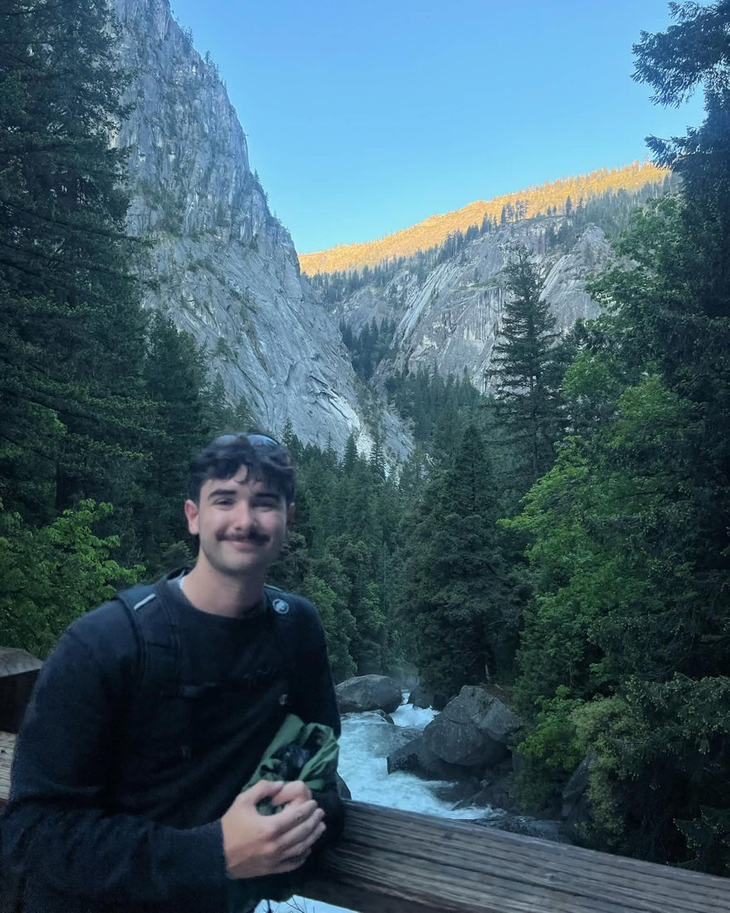

About
Hi, I'm Anthony.

I'm a level designer studying Digital Media (Game Design) at the University of Central Florida, graduating in May 2027.
I was nine when I decided I wanted to make games. I grew up on Call of Duty, Minecraft, and Counter-Strike, and somewhere along the way I realized that building those worlds could be my job. I also spend as much time outdoors as I can, and it shapes how I design: I want my levels to be beautiful and functional at once, the kind of place a player stops in just to take it in.
I've worked across most of the development process, including production, programming, lighting, and sound, but I always come back to level design. What I enjoy most is building a space that teaches the player something without a single line of tutorial text.
In summer 2026 I taught Unreal Engine 5 and Unity at an iD Tech camp. Debugging dozens of student projects taught me to explain my design decisions clearly, and that carries into how I work with my teams now.
Toolbox
- Unreal Engine
- Unity
- Blueprints
- C#
- C++
- Maya
- Aseprite
- Adobe CC
- Audacity
- Asana